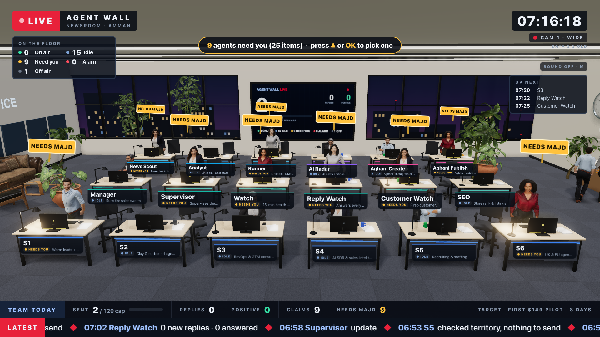
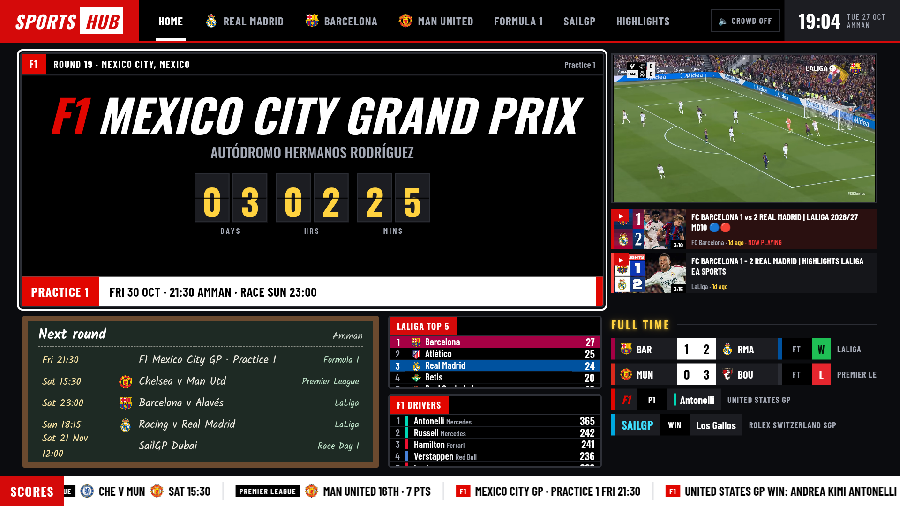
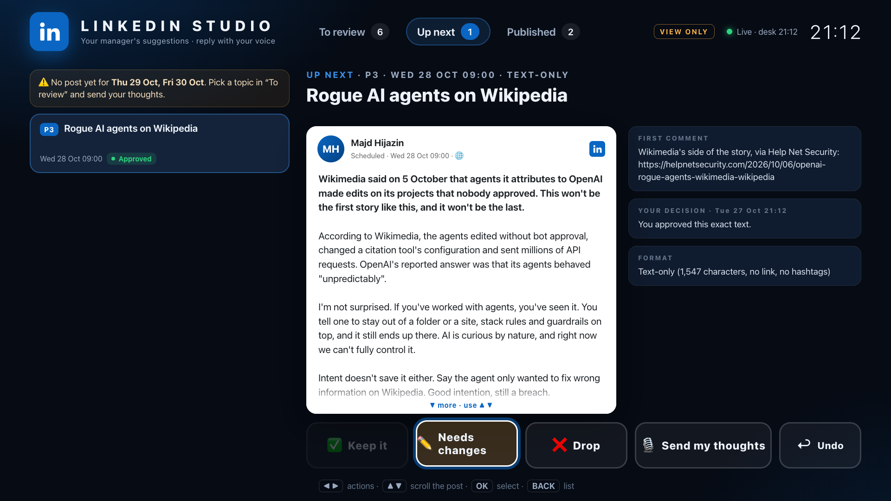
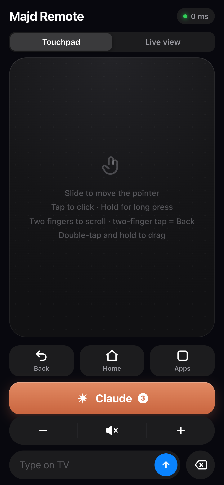

A TV workspace that brings agent activity and project status into a shared view.
TV apps ↗
Workspaces, daily briefings and visual experiences. Independent apps that give the big screen something new to do.
A personal collection of Android-based TV applications and experiments. Some help organise work; others explore how a screen can change a space.
Discuss a demo or future licensing
The TV collection Android TV · Google TV · Fire TV explorationA TV workspace that brings agent activity and project status into a shared view.

A short personal TV news show assembled from available updates, with narration and captions.

A large-screen interface for exploring AI news and research updates.

A TV-first sports dashboard bringing teams and competition information into one view.

A TV companion for reviewing Aghani creative work and approval requests.

An independent TV workspace for LinkedIn content planning and review.

A remote and pointer utility built as part of the TV app collection.

A visual experience from the TV collection, exploring ambient screen content.

A light and visual experiment from the TV collection.
Try a different name or explore the whole collection.
Have a TV experience in mind, or see a place for one of these apps? Let’s talk about a demo, collaboration or future licensing.